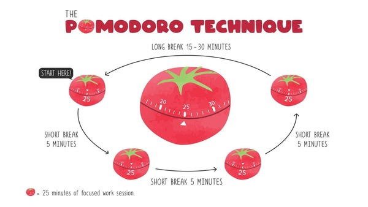
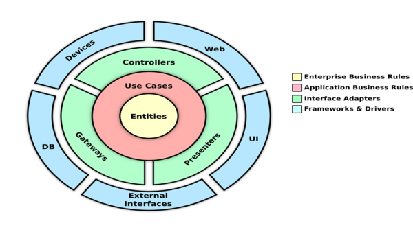
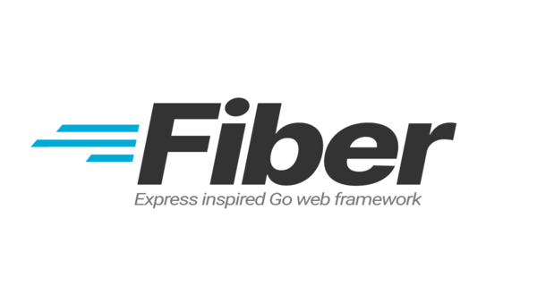

Portfolio
Other Project

Pomodoro Timer
The Pomodoro Technique is a time management method based on 25-minute stretches of focused work broken by five-minute breaks.
Github
Simple Notes API
Simple notes api allows you to add notes, get notes, and delete notes. This project is an implementation of creating a simple api using Nest Js
GithubLoyalty Management API
loyalty management api is an application used to create a loyalty program feature that can calculate points from members based on program benefits
GithubShop API Golang
Shop api golang is an online store application that allows users to buy and sell products simultaneously. This API is still in the development stage
Github

Github
Clean Architecture In Typescript
This project is a simple code for clean architecture pattern using Express Typescript and TypeORM.
Github
